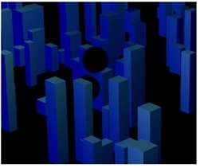

There are two ways to create holdouts, using either the DeepHoldout or the DeepMerge nodes. The primary difference is whether you want the node to produce a flattened output image or a deep output image after the holdout.
The DeepHoldout node removes or fades out samples in the main input that are occluded by samples in the holdout input. The result is a flattened image of your main input image, with holes where objects in the holdout input image have occluded parts of it. If you need a deep output image, then using the holdout operation in the DeepMerge node may be a preferable option.
To create a holdout using the DeepHoldout node:
| 1. | Connect the deep image you want to remove or fade parts from to the main input. |
| 2. | Connect the deep image with the occluding parts to the holdout input. |
| 3. | You can now view the result, which is a holdout with red, green, blue and alpha channels. Note that the output image is flattened. |
|
 |
| A holdout of blue buildings with ball shapes held out. |
Like the DeepHoldout node, the holdout operation of the DeepMerge node removes or fades out samples in input B that are occluded by samples in input A. However, unlike the DeepHoldout node, DeepMerge doesn’t flatten the data but produces a deep output image.
To create a holdout using the DeepMerge node:
| 1. | Connect the deep image you want to remove or fade parts from to input B. |
| 2. | Connect the deep image with the occluding parts to input A. |
| 3. | In the DeepMerge properties, set operation to holdout. |
| 4. | Due to floating point inaccuracy, some samples with very low alpha values may be incorrectly preserved. To remove them from the holdout, increase drop zero threshold. By default, this is set to 0.0000001. |
You can now view the result, which is a holdout with red, green, blue, and alpha channels. Note that the output image is still a deep image.
|
|